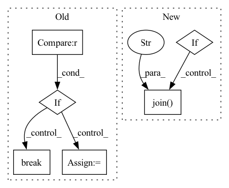

Pattern ID :33099
Before Change
self.model.load_state_dict(
torch.load(self.tmp_path + load_name_tmp))
print("load epoch={} model state".format(load_epoch))
if lr <= 0.9 * 1e-5 :
break
best = np.argmax(metrics["accuracy"]) // 这个不是最好的一次吗？
avg_acc = metrics["accuracy"][best]
// save metrics
with open("./metrics.json", "w") as f:
json.dump(metrics, f)After Change
print("==>Eval Acc:{:.4f}".format(avg_eval_acc))
metrics["accuracy"].append(avg_eval_acc)
metrics["loss"].append(avg_eval_loss)
if self.config["hyper_tune"]:
// use ray tune to checkpoint
with tune.checkpoint_dir(step=epoch) as checkpoint_dir:
path = os.path.join( checkpoint_dir, "checkpoint" )
self.save_model(path)
// ray tune use loss to determine which params are best
tune.report(loss=avg_eval_loss, accuracy=avg_eval_acc)
else:In pattern: SUPERPATTERN
Frequency: 3
Non-data size: 6
Instances Fragment ID: 95765012
Project Name: libcity/bigscity-libcity
Commit Name: 022010c6ffc7ff440e276127d6e6341751e03d69
Time: 2021-04-14
Author: 33283819+WenMellors@users.noreply.github.com
File Name: trafficdl/executor/traj_loc_pred_executor.py
M Class Name: TrajLocPredExecutor
N Class Name: TrajLocPredExecutor
M Method Name: train(3)
N Method Name: train(3)
M Parent Class: AbstractExecutor
N Parent Class: AbstractExecutor
M File Name: trafficdl/executor/traj_loc_pred_executor.py
N File Name: trafficdl/executor/traj_loc_pred_executor.py
M Start Line: 24
M End Line: 74
N Start Line: 33
N End Line: 71
Before Change
lam, L, loss = self.progress_history()
if self._count_finish >= 3 :
self.message = self.message + "success"
break
elif self.decision_history.count("accept") > 2 and self.decision_history[-1] == "accept" and L[-1] < 0.1 and ((loss[-2] - loss[-1])/loss[-1]) < (self.relative_tolerance/100):
self.message = self.message + "success"
break
elif self.L >= (1e9 - 1) and self._count_reject >= 12 and not self.take_low_rho_step():After Change
else:
self.step_method0()
if self.save_steps is not None and self.decision_history[-1] == "accept":
self.model.save(os.path.join( self.save_steps, f"{self.model.name}_Iteration_{self.iteration:03d}.yaml" ) )
lam, L, loss = self.progress_history()
Fragment ID: 95765011
Project Name: connorstoneastro/autoprof
Commit Name: 54e22993021b3929388b6319d6501791a016bc39
Time: 2022-12-29
Author: connorstone628@gmail.com
File Name: autoprof/fit/lm.py
M Class Name: LM
N Class Name: LM
M Method Name: fit(1)
N Method Name: fit(1)
M Parent Class: BaseOptimizer
N Parent Class: BaseOptimizer
M File Name: autoprof/fit/lm.py
N File Name: autoprof/fit/lm.py
M Start Line: 457
M End Line: 495
N Start Line: 477
N End Line: 494
Before Change
lam, L, loss = self.progress_history()
if self._count_finish >= 3 :
self.message = self.message + "success"
break
elif self.decision_history.count("accept") > 2 and self.decision_history[-1] == "accept" and L[-1] < 0.1 and ((loss[-2] - loss[-1])/loss[-1]) < (self.relative_tolerance/100):
self.message = self.message + "success"
break
elif self.L >= (1e9 - 1) and self._count_reject >= 12 and not self.take_low_rho_step():After Change
else:
self.step_method0()
if self.save_steps is not None and self.decision_history[-1] == "accept":
self.model.save(os.path.join( self.save_steps, f"{self.model.name}_Iteration_{self.iteration:03d}.yaml" ) )
lam, L, loss = self.progress_history()
Fragment ID: 95765016
Project Name: connorstoneastro/autoprof
Commit Name: 6cd267bc49a6a3c4f84c05f36540b6a20be36d20
Time: 2023-01-03
Author: connorstone628@gmail.com
File Name: build/lib/autoprof/fit/lm.py
M Class Name: LM
N Class Name: LM
M Method Name: fit(1)
N Method Name: fit(1)
M Parent Class: BaseOptimizer
N Parent Class: BaseOptimizer
M File Name: build/lib/autoprof/fit/lm.py
N File Name: build/lib/autoprof/fit/lm.py
M Start Line: 457
M End Line: 495
N Start Line: 478
N End Line: 495